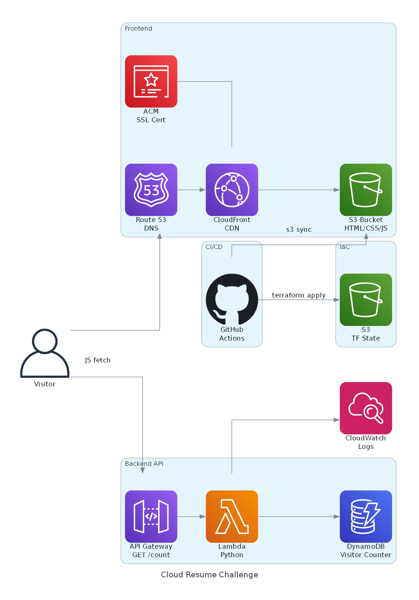
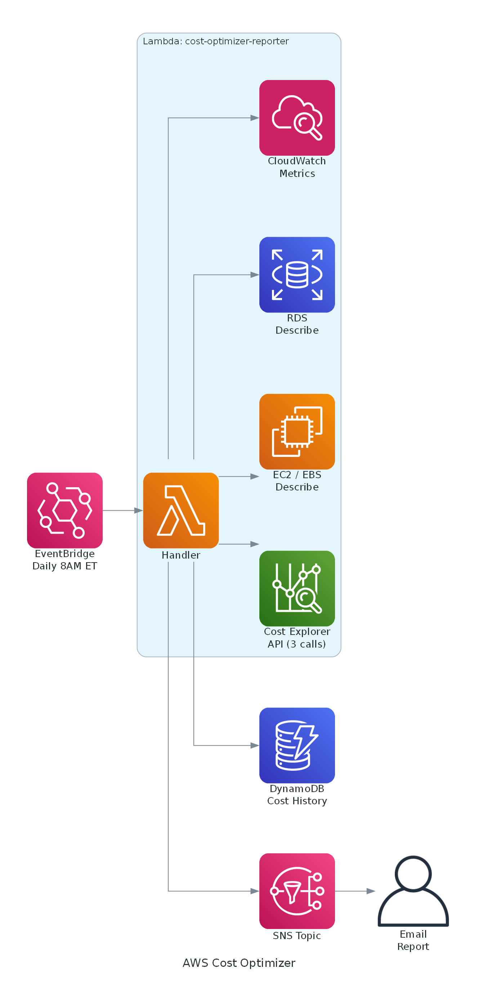

Hands-on cloud engineering
A full-stack serverless resume website built entirely on AWS, demonstrating cloud engineering skills from infrastructure to CI/CD.
HTML/CSS/JS hosted on S3, served via CloudFront CDN with HTTPS and custom domain through Route 53
API Gateway HTTP API triggers a Python Lambda function that atomically increments a DynamoDB visitor counter
All resources defined in Terraform with modular design, remote state in S3 with DynamoDB locking
Two GitHub Actions pipelines using OIDC — backend runs tests then terraform apply, frontend syncs to S3 and invalidates cache

The website files are stored in a private S3 bucket — no public access. CloudFront is the only thing that can read from it using Origin Access Control (OAC). This means all traffic goes through the CDN, which caches content at edge locations worldwide for fast delivery. An ACM certificate provides HTTPS, and Route 53 points the custom domain to the CloudFront distribution via an A record alias.
When someone loads the page, a small JavaScript file makes a GET request to an API Gateway HTTP API endpoint. API Gateway forwards the request to a Python Lambda function, which uses boto3 to call DynamoDB's UpdateItem with an atomic counter — incrementing the count by 1 and returning the new value in a single operation. The count is sent back as JSON and displayed in the footer. Session storage prevents double-counting on page navigation.
S3, CloudFront, Route 53, ACM, API Gateway, Lambda, DynamoDB, IAM, CloudWatch — 9 services total. Monthly cost: ~$0.50/month (Route 53 hosted zone) plus ~$13/year for domain registration.
A serverless FinOps tool that analyzes AWS spending, detects idle resources, and emails daily cost optimization reports with actionable recommendations.
EventBridge triggers a Lambda daily at 8 AM ET to pull Cost Explorer data — 7-day breakdown, month-over-month trends, and month-end forecast
Scans for unattached EBS volumes, unused Elastic IPs, old snapshots, and idle EC2/RDS instances via CloudWatch metrics
Flags day-over-day cost spikes (>50%) and month-over-month growth (>20%) with configurable thresholds
Entire stack defined in AWS CDK (TypeScript) — Lambda, DynamoDB, SNS, EventBridge, IAM — deployed via GitHub Actions with OIDC

Every morning at 8 AM ET, an EventBridge scheduled rule triggers the Lambda function. The function makes 3 Cost Explorer API calls ($0.03 total) to get a 7-day cost breakdown by service, a month-over-month comparison, and a month-end forecast. It then scans for idle resources using EC2, RDS, and CloudWatch describe/metrics APIs — all read-only.
The detector compares today's costs against yesterday's and flags spikes over 50%. It also compares current month-to-date against last month's total and flags growth over 20%. Both thresholds are configurable at deploy time. A minimum dollar threshold ($1) prevents noise from tiny cost fluctuations.
The report generator builds a plain-text email with an executive summary, top services by spend, daily cost breakdown, month-over-month comparison, waste findings with dollar estimates, and actionable recommendations. It's published to an SNS topic which delivers it via email. Cost history is stored in DynamoDB with a 90-day TTL for trend tracking.
cdk deploy~$0.90/month on a daily schedule (3 Cost Explorer API calls at $0.01 each × 30 days). Lambda, DynamoDB, EventBridge, SNS, and CloudWatch Logs all stay within free tier.